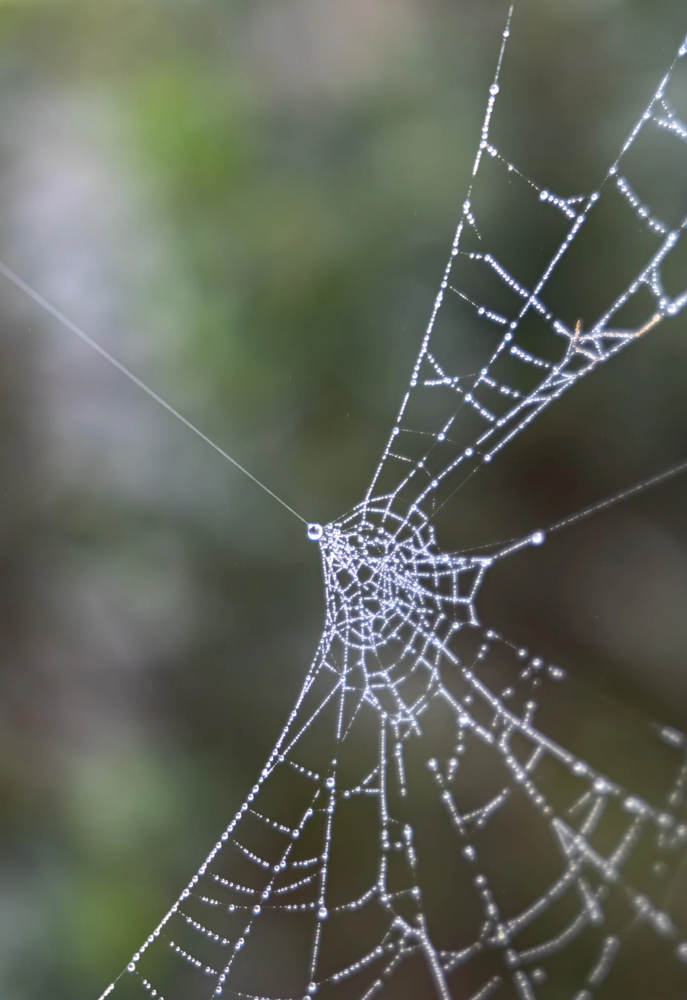
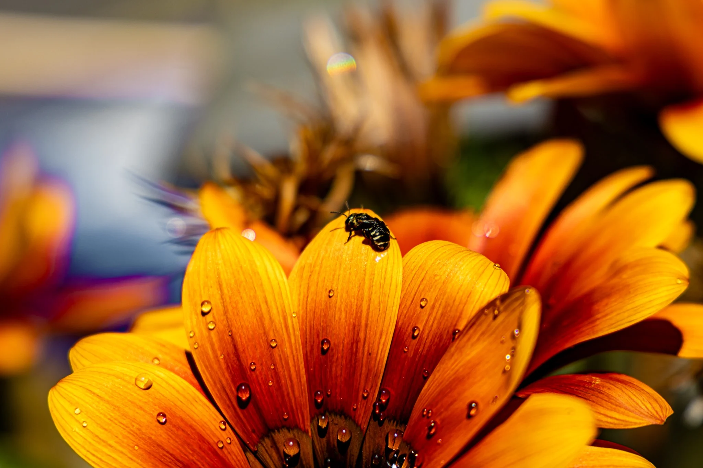
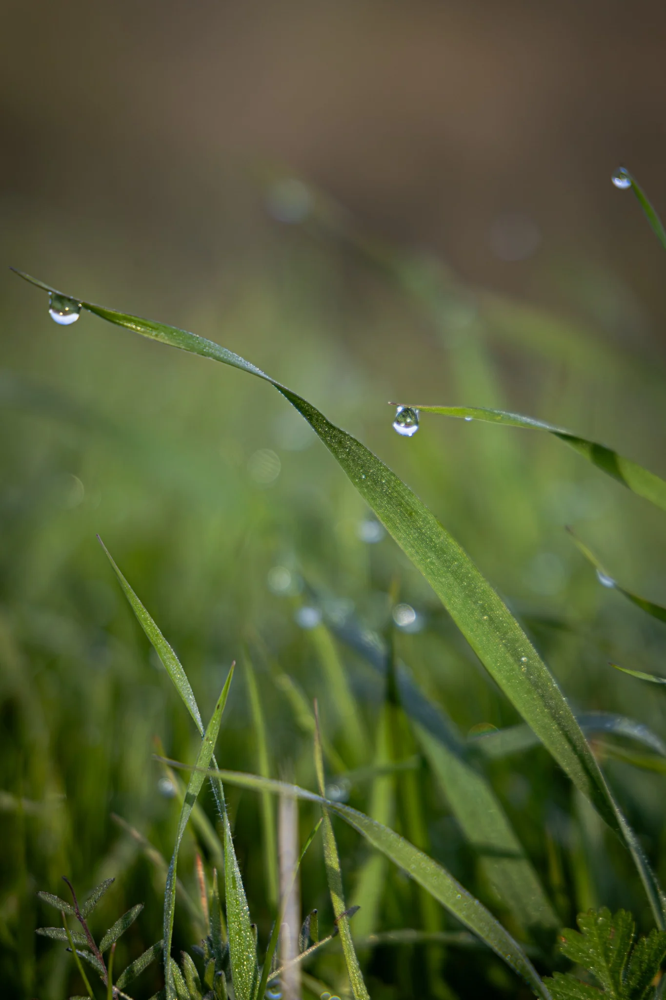
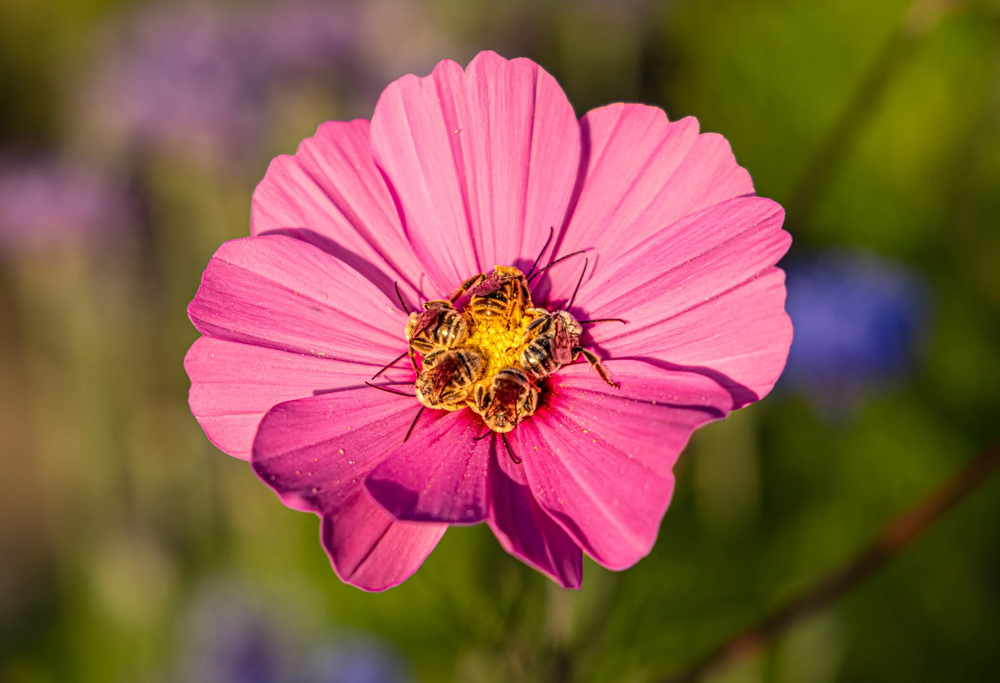
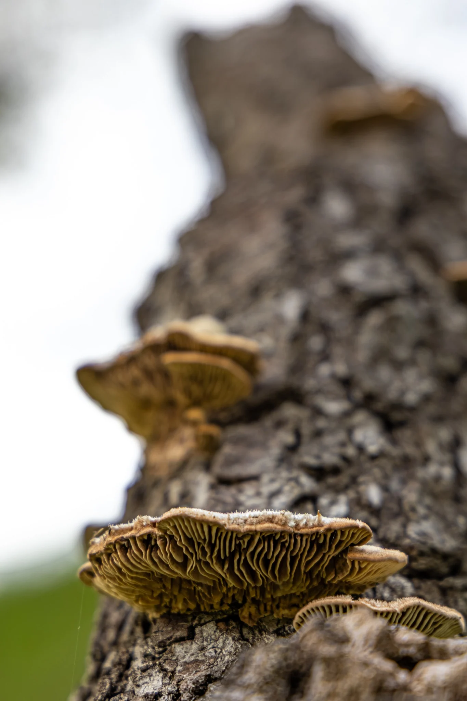
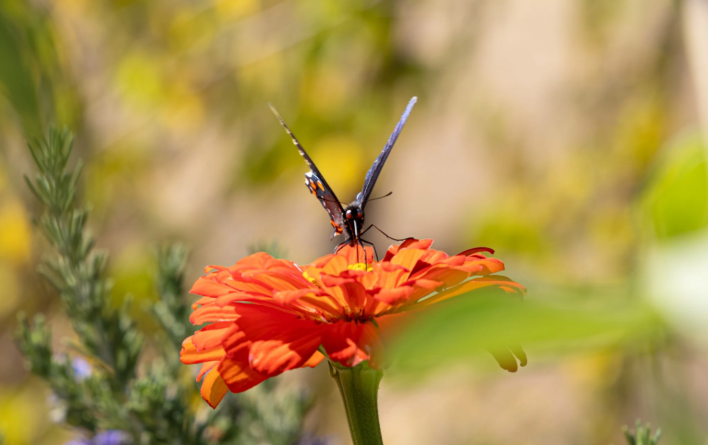
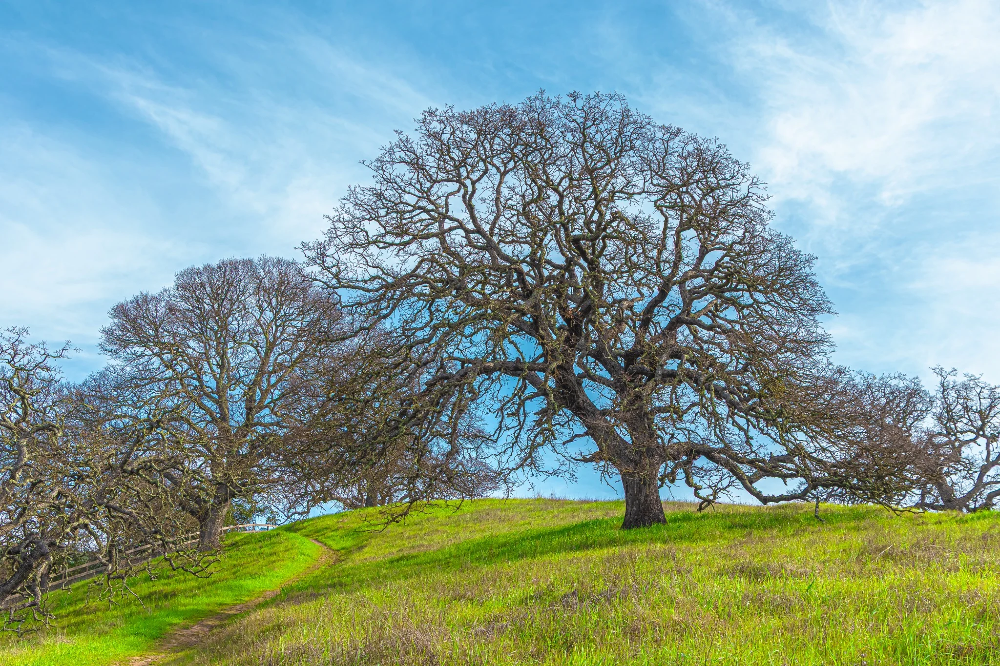
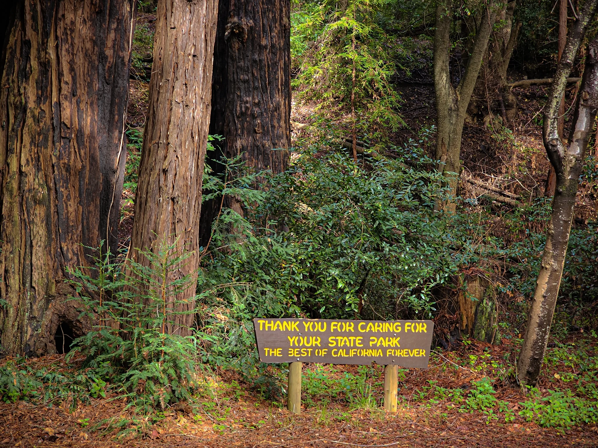

A living visual field journal
Things I Noticed
Not every photograph needs a grand destination. Some begin with a glint of water, an insect at rest, a familiar tree, or something nearly overlooked.

LSV-0001
Held Together by Morning
A spiderweb made visible by dense fog on an early January morning in Crockett, California.
Read the Field Notes
The morning did not begin with rain. It began with fog.
On winter mornings in Crockett, moisture can arrive quietly through the marine air. Tiny droplets settle across grasses, leaves, fences—and, on this morning, a spiderweb.
I almost walked past it. The web had likely been there all along, nearly invisible until the fog gathered along every strand. The morning had not created something new; it had simply revealed what was already there.
What quiet things become visible when we slow down long enough to notice them?

LSV-0004
A Brief Landing
A tiny sweat bee changes the subject while fresh water droplets collect on a Gazania chosen for the backyard garden.
Read the Field Notes
I stepped into the garden with a different photograph in mind.
After watering, droplets clung to the petals of a Gazania my partner had chosen to bring color to our backyard. I was studying the water when a much smaller subject appeared: a tiny bee, likely a sweat bee, moving among the petals.
The flower was there because someone had imagined a brighter garden. The water was there because the garden had been tended. The bee arrived because those choices had created something worth visiting. Sometimes the photograph we planned is only the beginning.
What moments appear only after we let go of the photograph we expected to make?

LSV-0008
The Unexpected Guest
An Anise Swallowtail caterpillar arrives on freshly picked dill and becomes the windowsill resident known as Mr. Poo.
Read the Field Notes
I found him by accident, hidden among freshly picked dill.
At first, I could not identify the small, dark caterpillar. I kept returning to the windowsill, replacing dill and watching him change. After another molt, his green bands and markings became more familiar, but it was his dramatic defensive response—a bright orange fork-like organ and an unusual odor—that finally helped us identify him as an Anise Swallowtail caterpillar.
By then, identification was only part of the story. He had become Mr. Poo: an unexpected resident, a daily routine, and a small life unfolding alongside our own.
How many meaningful encounters begin by accident?

LSV-0012
Held at the Edge
Late-winter fog leaves nearly every blade of grass holding a reflective world along a familiar Port Costa trail.
Read the Field Notes
Some mornings ask you to slow down before you have taken more than a few steps.
This is one of my most familiar trails, yet familiarity has never made it ordinary. Dense overnight moisture had left nearly every blade of grass carrying a droplet, and I found myself stopping again and again.
Each droplet caught a different fragment of the morning. Some reflected the hills; others seemed to hold the sky. The trail had not changed. My attention had.
How many worlds exist around us that only become visible when we choose to look closer?

LSV-0002
Where Morning Finds Them
Male long-horned bees sleep together on neighborhood flowers, gripping them with their mandibles until the morning warms.
Read the Field Notes
This observation began with someone else’s curiosity.
While walking our dog one cool morning, my partner noticed several bees hanging motionless from flowers in a neighbor’s raised garden bed. They gripped the blossoms with their mandibles and remained still while they waited for the day to warm.
Our research suggested they were male long-horned bees, which often sleep away from nesting sites. What fascinated us most was their rhythm: they returned to the same flowers in the evening and could be found together again the next morning. Some things become visible because we return.
How many familiar places become extraordinary once we learn when to visit them?

LSV-0005
A Little Radiance
A Lacey Phacelia returns successfully from seed, bringing native color and food for pollinators back to the garden.
Read the Field Notes
Some discoveries do not arrive because we planted them. They simply appear.
The first time I noticed this Lacey Phacelia in our garden, I was immediately enamored. Learning that it was a California native made the discovery even more meaningful, especially as my partner’s background in Plant Science has deepened our shared curiosity about native wildflowers and the lives they support.
When the flowers faded, I allowed the plant to finish its work and set seed. This photograph is of its return the following year—a small success, welcomed by us and by the pollinators that continue to visit it.
What quiet gifts might return if we simply allow nature to finish its work?

LSV-0009
Quiet Shelves
Shelf fungi appear on an oak beside a newly explored trail in the Mount Diablo foothills.
Read the Field Notes
There is a particular excitement in choosing a trail you have never walked before.
Along this unfamiliar route through the Mount Diablo foothills, I found an oak supporting layered shelf fungi unlike any I had encountered in my local explorations. My confidence with mushroom identification is limited, but that uncertainty became part of the discovery rather than a reason to dismiss it.
I did not need an exact name before I could stop, look closely, and recognize that the unfamiliar path had already offered something new.
What might we discover if we chose the unfamiliar path a little more often?

LSV-0003
Between Wings
A butterfly becomes visible evidence of the careful planting and stewardship practiced in the Port Costa Community Garden.
Read the Field Notes
The Port Costa Community Garden continues to surprise me each year.
Its plants have been selected and tended with care, creating a place where butterflies, bees, and other visitors return through the seasons. This butterfly was only one visible part of a much larger relationship.
Someone prepared the soil. Someone chose the plants. Roots deepened, flowers opened, and a butterfly arrived where years of stewardship had invited it to be. A healthy landscape often announces itself through the lives it supports.
What quiet acts of care continue shaping the world long after they are finished?

LSV-0006
Before the Leaves
A majestic oak, weathered fencing, and green foothills show a residential landscape with enough room left to breathe.
Read the Field Notes
For a brief time in spring, an oak reveals the full architecture of its branches before the canopy returns.
I found this tree along a residential trail near Mount Diablo. Weathered wooden fences traced the hills, and scattered signs of human life remained present without crowding the landscape. There was room for the foothills to breathe.
What stayed with me was not the absence of people, but the possibility of coexistence: homes, fences, grasses, wildlife, and old trees sharing a landscape without one completely erasing the others.
How much room does a landscape need before it remembers how to breathe?
LSV-0007
Sky Below
Winter rain transforms a dry basin into a temporary wetland, reflecting Mount Diablo and bringing life with the water.
Read the Field Notes
There are places that only seem to exist for part of the year.
In summer, this basin is dry and barren. After heavy winter rain, water gathers across the flats and Mount Diablo appears again beneath the horizon. The temporary wetland brings far more than a reflection: grasses revive, frogs emerge, ducks arrive, and cattle make use of the renewed landscape.
Life follows the water. One season does not replace another; it reveals a different chapter of the same place.
How many places have we mistaken for empty simply because we have known them in only one season?
LSV-0010
Two Ways to Wait
A young boy confidently crosses tide-worn rocks while the Monterey coast remains lively with waves, gulls, and distant voices.
Read the Field Notes
The beach was not quiet.
Waves met the rocks, gulls called in the distance, and conversations and children’s laughter carried across the shore. Among it all, a young boy moved confidently over the sea-drenched rocks, sure of his footing where the terrain looked rugged and uncertain.
I found myself listening as much as looking. Peace did not require the world to become silent. It came from being fully present within everything already happening.
How often do we mistake quiet for peace, when peace may simply be presence?

LSV-0011
Care for Nature
A simple sign discovered beneath the forests of Big Sur expresses the value at the center of the collection.
Read the Field Notes
Big Sur is often remembered for its coastline, but many of its quieter worlds wait beneath the trees.
Along a forest trail, I encountered a simple sign: “Care for Nature.” I did not make it, yet its words aligned completely with values I had carried for years. It did not ask visitors merely to admire or photograph the landscape. It asked them to care.
Sometimes the most significant discovery on a journey is not a view. It is a sentence that recognizes something already living within us.
What if caring for nature begins long before we decide to photograph it?